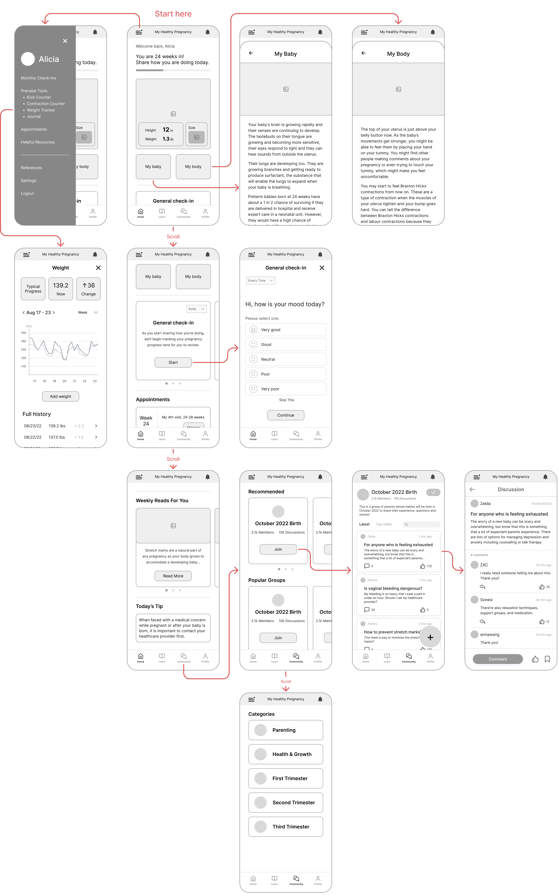

Pregnancy App Redesign
Timeline
10 Weeks
Role
UI/UX Designer
Tools
Figma, Maze
Skills
UI/UX Design, User Research, Wireframing, User Testing
Overview
Problem
MyHealthyPregnancy is a pregnancy app that provides risk identification during pregnancy. From past user research, the startup noticed that some users have provided valuable feedback on current app issues and ideas for new features. As the UX Design Intern, how can I conduct comprehensive user research on current users and iterate the design based on their feedback?
Outcome
Combining the original brand identity with new user feedback, I completely redesigned the whole application and added brand-new features. In this project, I self-taught UI/UX design principles and went through the whole design process.
End Result
Final Design Showcase
In 10 weeks, I redesigned features in the app by incorporating feedback from user research. The ultimate objective was to transform the app into an aesthetically delightful and effortlessly navigable pregnancy app.
1. Homepage
85% of survey responses mentioned they want more baby information on the homepage, such as a fruit size comparison and daily tips. More visuals can also make the user experience more pleasing.
2. Check-ins
The app used to require users to complete 6 daily check-ins, which was challenging for them to do consistently. But now, users can decide how often they want to check in and tailor the questions to their own preferences and needs.
3. Weight Tracker
50% of the surveyed users had trouble with the old weight tracker because it only tracked once a week and didn't allow editing past entries. With the new weight tracker, users can effortlessly edit their information and keep track of their weight trends.
4. Community Forum
Based on user requests, I analyzed popular pregnancy apps to create a supportive and informative space where users can connect, share experiences, and encourage each other.
Preparation
Competitive Analysis
I decided to first analyze 3 most popular pregnancy apps to find out common features and design trends. Among all features, size guide, community, and daily tip seem to be the most common ones that our app didn't have, and we could consider adding them to our app.

Discovering Issues
User Research Insights
To gain an understanding of how to improve the app from the current user's perspective, I conducted survey research with 150 users and held 8 phone-call interviews. The process of gathering user feedback posed a challenge for me.
Old Method:
Cold call all 150 active users to ask general questions (e.g., areas of the app they like/dislike the most) and willingness to participate in interviews.
It's not working! After cold calling 60 users, only 2 picked up their phone and only 1 actually responded.
New Method:
Online survey sent to 150 active users with a chance to win gift cards, which asked the same general questions. Received 87 responses!
15-min phone call interview on 8 active users: based on answers to the general questions, discussed further using open-ended questions to gain in-depth insights.
After analyzing the responses, I found the main user pain points are mainly about the limited information on homepage, check-ins that are too frequent, difficulty using the weight tracker, and wanting a community forum.
For suggestions mentioned by more than 40% users, I incorporated them into two personas:
Solution
Turning Insights into Action
After identifying key pain points, I brainstormed targeted solutions and organized them by app features to ensure a seamless and user-centered experience.

Wireframes
Design Comparison
01. Homepage - more baby information, visuals, size guide, and daily tips

02. Check-ins are too frequent

03. Weight Tracker is hard to use

04. Want a community forum

Usability Testing
Testing Findings
After finishing the design, I conducted unmoderated usability testing on 10 active users using Maze. I provided them with 5 tasks, and the testing result is shown in the chart below.
100%
of the users successfully completed the tasks, with the fruit size guide and body changes feature rated the easiest. Community forum interaction was the most challenging, likely because users were unfamiliar with this brand-new feature. Overall, users appreciated the clean UI, vibrant colors, and improved experience.
Meanwhile,
for improvements, users suggested a pregnancy milestone tracker, clearer appointment setup, and better support for searching forum groups to make discussions easier to find. These insights will guide future iterations.
Reflection
Before this internship, I had no knowledge of UI/UX or how to use Figma. In four weeks, I taught myself UI design and UX principles online, and Figma became my closest friend. Working with data analysts and UX researchers, I learned to analyze survey data, write effective interview scripts, and conduct unmoderated usability testing. Connecting with users through research and my design was a thrilling experience.
Since the company was very small (only 7 people), I also took on the
role of debugging the app and reviewing the logic document, which
took a lot of time. Therefore, I wasn't able to come up with
multiple iterations for usability testing. In the future, I will try
to iterate as much as I can to create and test more design ideas.
Overall, I was very proud of the result of my first UX design
internship! 😊